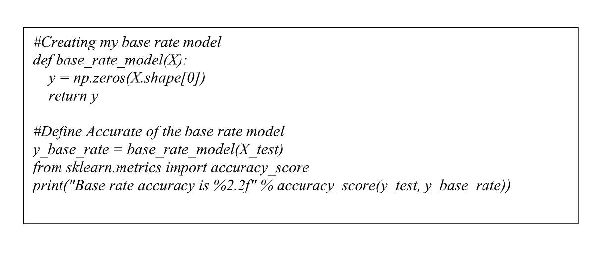
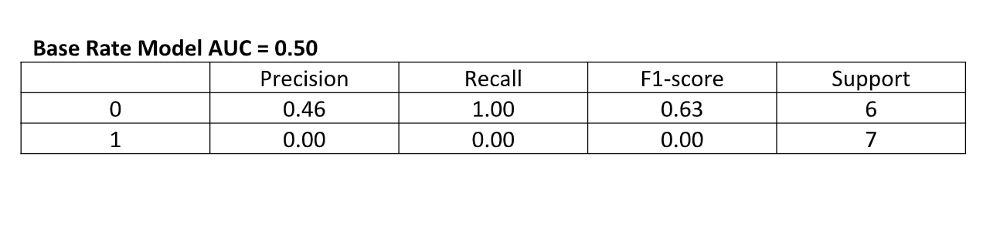

Malware and other phishing attempts are becoming more widely spread than ever before in the world today. People today continue to move more and more of their daily routines, memories, and transactions over to digital devices. The issue here lies with the amount of sensitive data people move over to their digital devices. This sensitive data gives hackers incentive and leaves people prone to attacks from black hat hackers attempting to gain and wrongfully use that data. Recently, there has been an increase in the use of botnets to obtain this sensitive data. A Botnet by definition is a network of private computers infected with malicious software and controlled as a group without the owners' knowledge These attacks implemented using botnet makes botnets a very dangerous threat to anyone using a device today. Previously completed research shows much difficulty in predicting malicious botnets. This ever-growing need for a solution to the rapidly increasing number of botnets on the internet today still remains up in the air. What makes this problem even more difficult is that not all botnets are technically malicious. Botnets are used by corporations every day to help solve costumer service related issues, help users buy products, and much more. Using machine learning, the goal is to properly identify a botnet on a website using key features that all botnets abide by. Once able to properly detect a botnet, many doors will open up in the world of cybersecurity that allow internet websites to manage this ongoing problem.
Previous Research
There’s been quite a bit of research already on botnets and the ability to detect them using machine learning. To get a better understanding of the problem at hand, referencing these publications gives a solid foundation on which to build a machine learning model upon. Reading these publication not only show how to attack the problem at hand, but also help determine new original features that haven’t been looked into yet. Some of these original features such as failed validations on a website, and failed login attempts will be covered in detail later on. Some of the more notable publications on this topic are as follows.
Selected Botnet Detection Techniques Using Flow Data
By: Tanay Bhattacharya
In short, Bhattacharya’s research concentrated on the Analysis and Implementation of selected bot detection methods that were independent of common detection techniques. Using flow based bot detection techniques that are generally considered metadata, Bhattacharya profiled for HTTP/P2P/DNS based Botnets. Bhattacharya’s research without a doubt pushed people in the right direction for selecting appropriate features in machine learning models.
An Analysis of Network Traffic Characteristics for Botnet Detection
By: Maria Jose Erquiaga, Carlos Catania, and Carlos García Garino
Erquiaga, Catania, and Garino realized that nowadays botnets have become one of the most dangerous threats for system administrators. They noted the many different attacks botnets can perform such as spam, denegation of service, key logging, and traffic sniffing. In their publication they analyze some of the most relevant network traffic characteristics used for botnet recognition. In turn their publication allows for deciphering what unusual network traffic looks like which helps scale people a models features appropriately.
BotMiner: Clustering Analysis of Network Traffic for Protocol- and Structure-Independent Botnet Detection
By: Guofei Gu, Roberto Perdisci, Junjie Zhang, and Wenke Lee
Gu, Perdisci, and Lee’s research on botnets recognize that they are the key platform for many internet attacks, such as spam, distributed denial-of-service (DDoS), identity theft, and phishing. They state that most of the current botnet detection approaches work only on specific botnet command and control (C&C) protocols (e.g., IRC) and structures (e.g., centralized), and can become ineffective as botnets change their C&C techniques. In their publication, they helped guide an understanding of the different types of botnets and how they work. With someone with no clue as to what a botnet is, their research sheds light onto this unfamiliar subject while once again helping to choose appropriate features.
Detecting P2P Botnets Through Network Behavior Analysis and Machine Learning
By: Sherif Saad, Issa Traore, Ali Ghorbani, and Bassam Sayed
Saad, Traore, Ghorbani, and Sayed’s research proposed a new approach for characterizing and detecting botnets using network traffic behaviors. Their approach focuses on detecting the bots before they launch their attack. Saad, Traore, Ghorbani, and Sayed’s research was one of the first publications mentioned here that focused only on network data which in turned help someone new to the topic understand the predictable actions of a botnet behavior.
Machine Learning Based Botnet Detection with Dynamic Adaptation
By: Supranamaya Ranjan, and Feilong Chen
Ranjan and Chen addresses the problem of detecting bots in network traffic based on a classification models. Using machine learning algorithms, Ranjan and Chen based their model on features extracted from network data associated with either known malicious or known non- malicious client. Ranjan and Chen then apply the learned classification model to features extracted in real-time from current network data. This publication not only brings the idea of a botnet machine learning model into a concept, but also shows the many types of botnet attacks and how crucial research on this topic is.
Collecting the Data
FTo properly build a machine learning model for detecting botnets across the web, it is important to obtain a dataset that can properly reflect internet traffic across the web. Due to the nature of this problems complexity, it is crucial to research and choose the best features that will yield the best results for the model. For this creating synthetic data since there are no publicly offered datasets on botnets. The features chosen are as follows: number of login attempts, number of failed validations, average byte flow, current byte flow, and whether or not a botnet was detected. Each of these features mimics user account data that has been collected across a single website. By examining these features across the entirety of a website, the goal is to properly detect whether or not there are active botnets hidden among the users.
Model Features
Number of Login Attempts – Once a website is infected with a botnet, it goal is usually to perform some malicious attack by either accessing a user’s account to gain data, or imitating a user to extract information from the infected site. By keeping track of the number of failed login attempts it is possible to detect whether or not there is a botnet currently trying to access user’s accounts.
Failed Validation Attempts - - Throughout websites there are a number of codes or features for customers do not request an account name, a billing address, or any other personal identification information. Features like these are a perfect target for brute-force attacks that run through combinations quickly to look for valid pairs of credit card numbers and pin codes. Hackers use bots to execute these attacks. When an invalid pair is attempted, that generates a failed validation notification. If validation failures suddenly trend up or spike, then that might be a signal that bots are trying to steal information.
Average Byte Flow - When botnets are trying to steal information, it usually involves extracting an pulling data back and forth from the infected website to the botnet host. Websites usually keeps tabs on the about of information that flow to and from their website. If there is a unusual spike in the amount of data that is being downloaded from a website at a particular time, it could be a botnet trying to extract information. Since the number of bytes are so important to detecting botnets, keeping track of the average byte flow on a site is a crucial feature for botnet detection.
Current Byte Flow - Using the same logic as the average byte flow on a website, keeping track of the current byte flow across the site is another crucial feature for botnet detection. When the current byte flow is much higher than the average flow of bytes. The possibly of a botnet is very high.
Current Byte Flow - By definition, a packet when referring to network traffic is the unit of data that is routed between an origin and a destination on the internet. A typical packet contains anywhere from 1,000-1,500 bytes. If the number of packets currently flowing across a website is abnormally high, it could be a good indicator that there is a botnet presence on the network.
Machine Leanring Model Analysis
In short, Bhattacharya’s research concentrated on the Analysis and Implementation of selected bot detection methods that were independent of common detection techniques. Using flow based bot detection techniques that are generally considered metadata, Bhattacharya profiled for HTTP/P2P/DNS based Botnets. Bhattacharya’s research without a doubt pushed people in the right direction for selecting appropriate features in machine learning models.
Logistic Regression Approach
To start the Logistic Regression model for botnet detection, specifying the independent and dependent variables in the model represented as , then from there plugging the into a sigmoid function. The sigmoid function creates a non-linear S-shaped curve where the curve has a finite limit of as approaches and 1 as approaches . Since the base case of the Sigmoid Function of is exactly 0.5, it is possible to accurately predict whether a variable is a 0 if its probability is less than 0.50, or a 1 is it is greater than 0.50. Mathematically this can be represented by taking our original value and plugging it into the Sigmoid Function represented by . From there it is possible to solve for the in terms of the Sigmoid Function which results in the equation . This equation will determine the probability and accurately classify the results. Luckily there are many library’s that are able to handle the heavy mathematics involved with this classification method.
Logistic Regression Results
The results the Logistic Regression model could have been better, but the model still yielded some very interesting results. A few of the more notable relationships between the features happened to be between the number of failed validations and login attempts, and the current byte flow along with the packet flow. The Logistic Regression model did a good job accurately classifying the relationships between these features compared to others.
After applying a Logistic Regression to my test model, after a bit of research it was possible to compare results using a base rate model. The base rate model can easily be applied in this problem because of the binary outcomes of the model. What the base rate model does is set all the predicted values to the same type, in this case all the predicted values will become zero. We can use this base rate model to determine the basis on which to shoot for in terms of model accuracy.
After applying a Logistic Regression to my test model, after a bit of research it was possible to compare results using a base rate model. The base rate model can easily be applied in this problem because of the binary outcomes of the model. What the base rate model does is set all the predicted values to the same type, in this case all the predicted values will become zero. We can use this base rate model to determine the basis on which to shoot for in terms of model accuracy.
The results the Logistic Regression model could have been better, but the model still yielded some very interesting results. A few of the more notable relationships between the features happened to be between the number of failed validations and login attempts, and the current byte flow along with the packet flow. The Logistic Regression model did a good job accurately classifying the relationships between these features compared to others.
When applying the Logistic Regression we can see that the predictions results improved. The model went from the base rate AUC of 50% and increased the odds of predicting the correct outcome to 79%. Comparing these results to another classification method will be the best way to validate these results and determine how accurate the model really is.
Random Forest Approach
For the second classification model we will be assigning a Random Forest Algorithm. Random Forest algorithms are a supervised classification algorithm. This algorithm creates the forest with a number of decision trees. The more trees in the forest the more in depth the forest looks. Random Forest is build off of the idea of bagging which is a method of repeatedly selecting data at random and then performing a decision tree classification method to it. The genius behind the Random Forest Algorithm is that each new tree in the algorithm is grown from the knowledge gained from the previous one. This method is highly accurate when applied to classification problems.
Random Forest Results
The results from the Random Forest model stood out more than the Logistic Regression model. Once again the more notable relationships between the number of failed validations and login attempts. Even more outstanding was that the Random Forest Algorithm had better accuracy than the Logistic Regression model and the current byte flow along with the packet flow.
When running the Random Forest model though the AUC scoring method, we can see that the predictions results were better than that of the Logistic Regression. We went from the base rate model AUC of 50% and increased the odds of predicting the correct outcome to 86%.
In Conclusion
I’ve gaineda plethora of information about both topics that have without a doubt opened up many doors for me in the future in this field. Attempting to tackle a project of this scale while being so new to both fields have pushed my problem solving skills to the max while rewarding me with knowledge on once unfamiliar subjects. Each subproblem that I tackled challenged me to attack or look at my model in a different way that I never would have thought to. Intensive research online such as previous research publication, or digging thorough machine learning documentations have helped me overcome any challenge that I was presented with. With the hindsight this project has gave me, the world of machine learning has opened up its doors to me and I am very eager to perform more research in this field in the near future. Some of the more important skills I have learned weren’t necessarily centered around the many different algorithms and their approaches, a simple Google could handle that issue. In fact, the most useful skill I had obtained is how to handle my data along and how to extract the most important features for a model. One can learn and apply as hundreds of algorithms to a machine learning model, but if the right features are being tested, the results will always be poor. If I were to continue my research into the ongoing botnet problems that exist on the web today, not only would I collect more data, but I would push further into whether or not these detected botnets were performing malicious actions. With the retrospect of my project results, if I were to tackle this problem again I would focus less on the algorithms I will be using and more on collecting accurate and useful data. It was as if I kept hitting an invisible wall every time I tried to draw better conclusions about my model. Obtaining more on realistic data is something that I was unable to find and I feel as if it affected the end results of my model. I thoroughly enjoyed my journey into machine learning and I can’t wait to see what the future holds for me in this field of Computer Science.